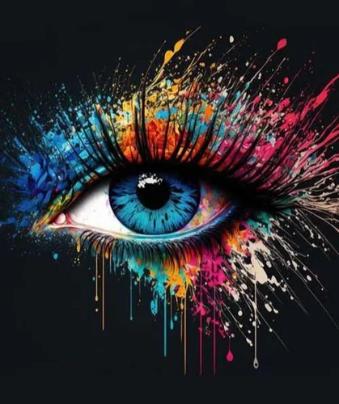

Mordern Art
Date - 20,June 2021

Modern art is a diverse and dynamic artistic movement that emerged in the late 19th century and continues to evolve and influence the art world today. This artistic revolution was marked by a departure from traditional styles and a rejection of the academic norms that had prevailed for centuries. Instead, modern art embraced experimentation, innovation, and a wide range of artistic expressions. The birth of modern art can be traced back to the mid- to late-19th century, with movements like Impressionism and Post-Impressionism challenging conventional artistic techniques. Artists such as Claude Monet, Vincent van Gogh, and Paul Cézanne broke away from the strict rules of representational art, exploring new ways to capture light, color, and emotion in their works. Impressionist paintings, characterized by their loose brushwork and focus on fleeting moments, laid the foundation for the artistic revolution that was to come. As the 20th century unfolded, modern art underwent further transformations with the emergence of numerous movements and schools. Some of the most prominent ones include Cubism, Futurism, Surrealism, Abstract Expressionism, and Pop Art. Each of these movements brought its own unique perspective and challenged traditional artistic boundaries. Cubism, pioneered by Pablo Picasso and Georges Braque, introduced the concept of fragmented forms and multiple viewpoints, effectively deconstructing reality and reassembling it on the canvas in an abstract and analytical manner. This movement revolutionized the way artists approached space and form. Futurism, led by artists like Umberto Boccioni, glorified the dynamism of the modern industrial age, celebrating speed, technology, and the machine as essential elements of the contemporary world. Futurist works are characterized by their vibrant colors and kinetic energy. Surrealism, with Salvador Dalí and René Magritte as key figures, delved into the world of dreams and the subconscious, creating art that explored the irrational and the bizarre. Surrealist works often feature strange, dreamlike imagery and unexpected juxtapositions. Abstract Expressionism, a post-World War II movement, was marked by the works of artists like Jackson Pollock and Willem de Kooning. This movement placed a strong emphasis on the artist's emotional and spontaneous expression, with large, gestural brushwork and a focus on the act of painting itself.Pop Art, epitomized by artists such as Andy Warhol and Roy Lichtenstein, embraced the mass culture of consumerism and popular media. It incorporated everyday objects and imagery into its art, blurring the lines between high and low culture. Modern art has continued to evolve into the contemporary art of the 21st century. Today's artists draw from a vast array of styles, materials, and technologies to create works that challenge, provoke, and inspire. From installations and performance art to digital and conceptual art, the boundaries of what can be considered "art" have expanded in remarkable ways. Modern art has had a profound impact on the way we perceive and interpret the world around us. It encourages viewers to question, explore, and engage with art on a personal level. The diversity and innovation within modern art reflect the ever-changing nature of society and the human experience, making it a testament to the boundless creativity of artists and their enduring ability to shape culture and inspire thought.